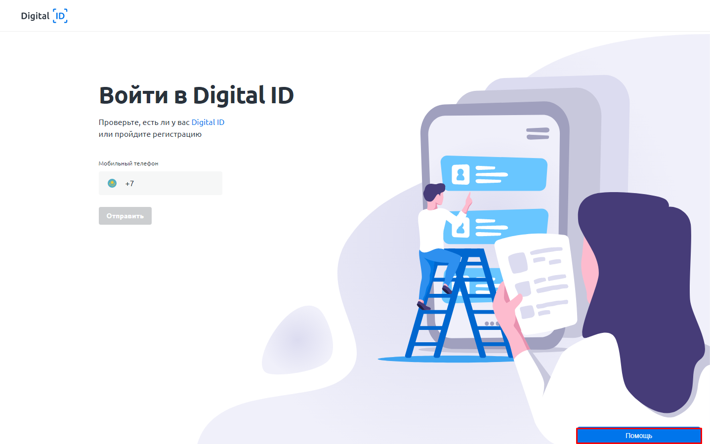
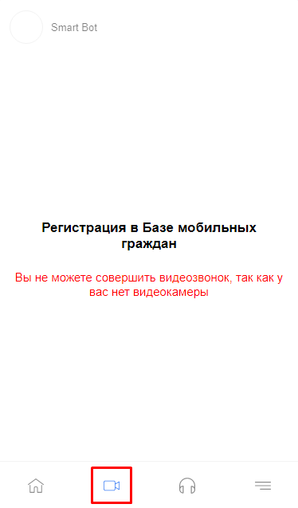
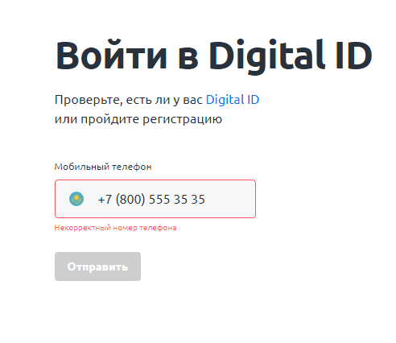
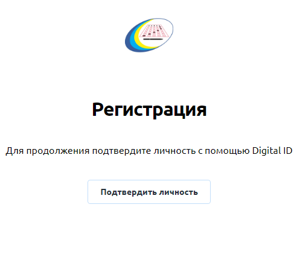

1) Переходим на сайт did.gov.kz с браузера на телефоне (компьютере), если у вас есть программа на телефоне - удалите.
2) Нажимаем на кнопку "Помощь" в правом нижнем углу.
3) Выбираем язык и жмём на кнопку видеокамеры, если не получается читаем пункт %пункт_нейм%

4) Показываем удл, диктуем номер и код который пришёл на телефон оператор (по инструкциям оператора крч)
5) Закрываем ассистент и вводим номер телефона сюда, затем код из смс. Проходим видео-идентификацию (это ИИ, простой робот, ̶р̶а̶з̶в̶е̶ ̶о̶н̶ ̶м̶о̶ж̶е̶т̶ ̶н̶а̶п̶и̶с̶а̶т̶ь̶ ̶с̶и̶м̶ф̶о̶н̶и̶ю̶?̶ краситься ради него не надо)))

6) После добавляем удостоверение, сфотографиров его с обеих сторон.
7) Вы получили блокировку! Теперь повторите пункты со второго по пятый для одного из родителей и добавьте себя в список детей.
8) Переходим на сайт ent2020.testcenter.kz, Выбрав язык, вводим e-mail (желательно существующий), получаем на него логин и пароль для входа.
9) Нажимаем на кнопку ̶и̶ ̶п̶о̶л̶у̶ч̶а̶е̶м̶ ̶р̶е̶з̶у̶л̶ь̶т̶а̶т̶, подтверждаем личность как в пункте 5

10) Подаём заявку
????
PROFIT